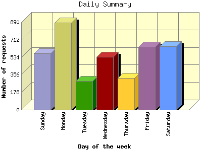

The Daily Summary identifies the level of activity as a total for each day of the week. This summary also compares the level of activity on weekdays and weekends as a total for the report time frame.

| Day of the week | Number of requests | Number of page requests | |
|---|---|---|---|
| 1. | Sunday | 574 | 169 |
| 2. | Monday | 884 | 183 |
| 3. | Tuesday | 293 | 109 |
| 4. | Wednesday | 537 | 152 |
| 5. | Thursday | 322 | 150 |
| 6. | Friday | 640 | 151 |
| 7. | Saturday | 647 | 189 |
| Total Weekdays | 2,676 | 745 | |
| Total Weekend | 1,221 | 358 | |
This report was generated on January 28, 2013 20:38.
Report time frame December 30, 2012 00:02 to January 28, 2013 22:40.
| Web statistics report produced by: analog 5.30 / Report Magic 2.15 |